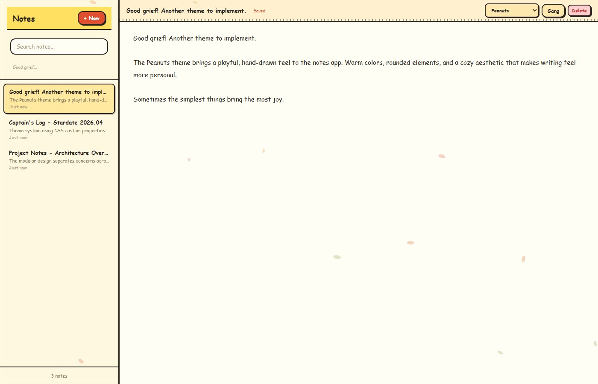
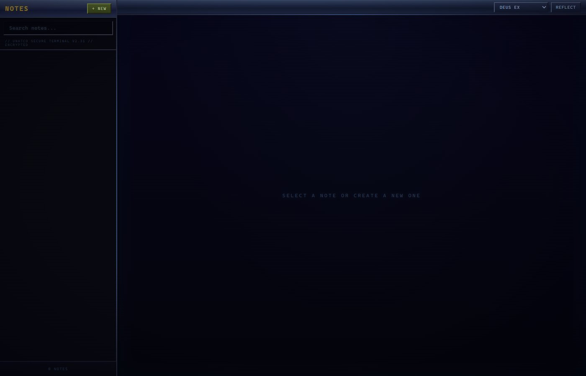

A local-first notes app with themed interfaces — because writing should feel good.

The Peanuts theme — warm colors and a hand-drawn feel.
A fast, privacy-first notes app that runs entirely on your machine. No cloud sync, no accounts, no telemetry — just your notes stored in IndexedDB. It ships as both a desktop app (via Electron) and a PWA for mobile.
The real hook is the theme system. Instead of boring light/dark toggles, each theme is a complete visual overhaul — from color palettes and typography to decorative elements and animations.
Each theme is a complete visual overhaul — not just a color swap.

UNATCO secure terminal aesthetic. Scan lines, amber text, that cyberpunk feel.
Warm yellows, rounded elements, floating particles. Good grief, it's cozy.
The entire frontend is a single index.html file — no build step, no bundler. Themes are implemented with CSS custom properties, so switching themes is just swapping a data attribute on the root element. Each theme can override ~30 CSS variables for colors, fonts, borders, and effects.
The backend is a minimal Node.js HTTP server that serves static files and proxies API calls to Claude for an optional AI assistant feature. Data persistence is handled client-side with IndexedDB, so the server is really just a file server.
For desktop distribution, it wraps in Electron with a custom preload script for system integration. For mobile, it registers as a Progressive Web App with offline caching via Service Workers.